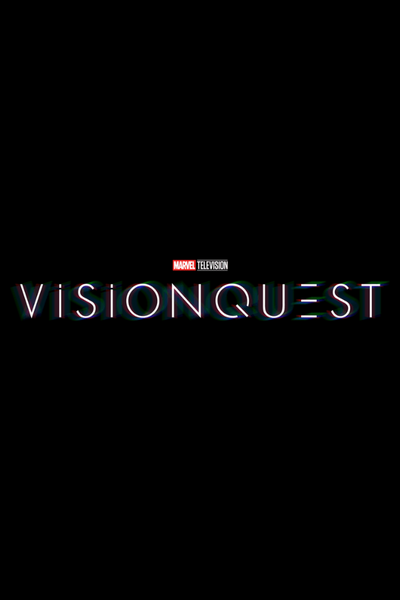

DRAMA · AÇÃO · FICÇÃO CIENTÍFICA
VisionQuest
O Visão Branco explora seu novo propósito e tenta reconstruir a própria identidade após os acontecimentos de WandaVision.
Estreia da série
Disney+14 de outubro de 2026
Os títulos dos episódios serão adicionados quando forem divulgados.